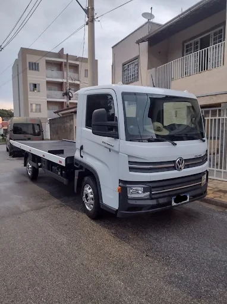
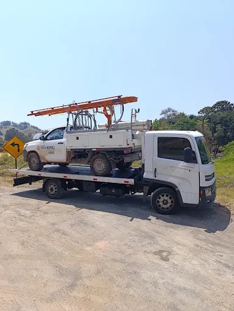
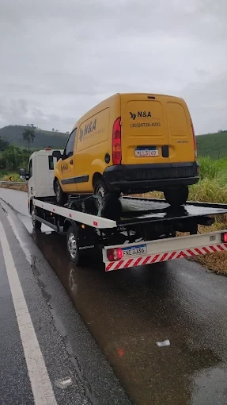

24horas
Socorro e reboque para situações em que você precisa de atendimento. Dia e noite.
O que fazemos
- GuinchoVeículos leves e utilitários
- Reboque
- Auto socorro
- Carga de bateria
- Entrega de combustível
- Troca de pneu



4+ ★ 42 avaliações no Google
“Ótimo profissional, atendimento rápido.”
“Super solícito nos atendimentos, preço muito bom.”
“Serviço, rapidez, qualidade, super recomendo!!!”
Fale com a gente
Endereço informado no Google:
Francisca Augusta — Rua Angelo Afonso Baret de Barros,
R. Ondina Pereira Rios, Pouso Alegre — MG, 37557-057
Solicitar socorroAbrir no Google MapsInstagram @rapidosguinchos